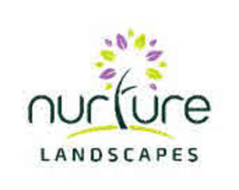
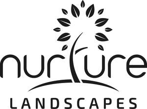
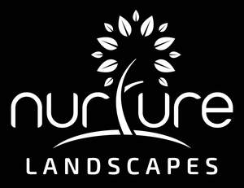

Trade Mark Journal No.2025/040 3 October 2025
UK00004251648 19 August 2025 (35,37,42,44,45)
Mark 1

Mark 2
Mark 3

Mark 4

- Class 35
- Advertising, marketing and promotional services; Business management, organization and administration; Office functions; Loyalty, incentive and bonus program services; Provision and rental of advertising space and media; Business assistance, business management and business administrative services; Data processing, systematisation and management; Business analysis and information services; Business management, business assistance, advertising, business consultancy for facility management and grounds maintenance; Business organisation and operation consultancy; Business advice, business information and business consultancy relating to biodiversity, sustainability, environmental issues and green solutions; Business advice, business information and business consulting services related to biodiversity, sustainability, environmental and green solutions initiatives; Retail services, online retail services, wholesale services and online wholesale services in relation to cleaning, polishing and abrasive preparations, mould removing preparations, cleaning preparations for use in removing animal, pest and vermin droppings; Retail services, online retail services, wholesale services and online wholesale services in relation to pest control preparations and articles, vermin destroying preparations, vermin repelling preparations, pesticides, fungicides, herbicides, agricultural pesticides, domestic pesticides, behaviour modifying chemicals for controlling pests and vermin; Retail services, online retail services, wholesale services and online wholesale services in relation to common metals and their alloys, ores, metal materials for building and construction, transportable buildings of metal, non-electric cables and wires of common metal, small items of metal hardware, metal containers for storage or transport, safes, wind driven bird repellent devices made of metal, bird spikes of metal, metal wire frames for protection of solar panels and chimneys from birds and other pests; Retail services, online retail services, wholesale services and online wholesale services in relation to navigation, surveying, photographic, audiovisual, optical, weighing, measuring, signalling, detecting, testing, inspecting, life-saving and teaching apparatus and instruments, apparatus and instruments for conducting, switching, transforming, accumulating, regulating or controlling the distribution or use of electricity, apparatus and instruments for recording, transmitting, reproducing or processing sound, images or data, recorded and downloadable media, computer software, blank digital or analogue recording and storage media, safety, security, protection and signalling devices, alarms and warning equipment, access control equipment, surveillance cameras, security cameras, burglar alarms, motion sensors, sensors, detection apparatus, security alarms, security control apparatus, electric and/or electronic apparatus and instruments for attracting, removing, eradicating, killing, destroying and deterring flies, bugs, insects and pests, electronic publications; Retail services, online retail services, wholesale services and online wholesale services in relation to gardening products, gardening articles, landscape products and landscape articles; Retail services, online retail services, wholesale services and online wholesale services in relation to pest control products, pest control preparations and pest control articles; Retail services, online retail services, wholesale services and online wholesale services in relation to agricultural implements, garden machinery, electrically operated tools for use in landscaping, grounds maintenance, gardening or tree work, grass cutting equipment, mowers, lawnmowers, flails, spray equipment, fertiliser spreading machines, salt/grit spreading machinery and tools, leaf blowers, leaf collectors, mowing equipment, strimmers, brush-cutters, back-pack blowers, pedestrian mowers, rotary mowers, cylinder mowers, chainsaws, aerators, agricultural machines, agricultural machine tools, agricultural machines for ground cultivation, soil working, fertilising, grass cutting, seed planting, sowing, ploughing, grass collecting, agricultural spraying machines, barking machines, chippers [power lawn and garden tools], electric apparatus for the care of gardens, electric garden pumps, electric garden scythes, electric garden shredders, electric grass shears, electric grass trimmers, electric hedge scissors, electric hedge shears, electric hedge trimmers, electric lawn mowers, electric lawn trimmers, electric lawn trimmers, fertiliser spreading machines, garden rollers [machines], garden rotavators, garden tilling machines, garden tractors for mowing lawns, powered gardening machines, electric gardening tools, gasoline lawn mowers and lawn trimmers, grass collecting and cutting machines, grass edging and trimming machines, horticultural machines, lawn and garden string trimmer spools, lawn and garden tilling machines, lawn raking machines, lawn rolling machines, planting machines, ploughs, power hoes, power operated cultivators, dethatchers, pruning saws and shear [other than hand operated], robotic lawnmowers, scarifying machines for garden use, seated lawn mowers, shredding machines, sprayers [machines] for garden use in spraying weedkiller and insecticide, sprayers [machines] for horticultural use, tree branch cutters (electric-), tree branch pruners (electric-), tree stump cutters, weeding machines; Retail services, online retail services, wholesale services and online wholesale services in relation to agricultural, gardening and landscaping tools, agricultural implements, hand-operated, agricultural sprayers (hand operated), apparatus for destroying plant parasites, hand-operated, border shears, branch cutters (hand operated), diggers (hand tools), digging forks [spading forks], fertilizer spreaders (hand operated), fertiliser scoops, garden forks, garden tools, hand operated, gardener’s knives, gardening scissors, shears and pruners, gardening trowels, hand operated hoes, hand operated lawn aerators, hand operated lawn edgers, hand-operate post hole diggers, hand-operated sprayers for weed killer and insecticides, hand-operated tillers, hand operated tools for agriculture and for forestry, hand operated tools for planting bulbs, hand operated weed cutters and weed diggers, hand powered cultivators for gardening, hand operated hedge cutters, hand operated hedge trimmers, hoes, lawn aerators [hand tools], lawn clippers [hand instruments], lawn edge trimmers [hand-operated tools], lawn rakes [hand-operated tools], lawn rollers [hand-operated tools], livestock marking tools, pickaxes, picks [hand tools], pitchforks, pointing trowels, pruning knives, pruning saws [hand-operated], pruning saws [hand tools], pruning scissors, rakes, scarifiers [hand-operated], scythes, secateurs, seed drills (hand-operated -), shovels, shovels [hand tools], sickles, spades, spiked rollers [hand operated tools] for use in soil aeration, sprayers for use in agriculture [hand tool], sprayers for use in horticulture [hand tool], thistle extirpators [hand tools], thistle extractors [hand tools]: three-prong cultivators for gardening, tillers, hand-operated, tree pruners, weeding forks, weeding tools [hand operated], garden saws, garden clippers, garden scarifying machines, hedge clippers, garden choppers, garden chippers, powered sprayers, hand operated garden instruments, garden implements and tools, garden forks, garden spades, garden trowels, garden hoes, garden shovels, garden mattocks, garden knives, garden rollers; Retail services, online retail services, wholesale services and online wholesale services in relation to building materials, constructions for gardens and landscapes, rigid pipes for building, asphalt, pitch, tar and bitumen, transportable buildings, monuments, figurines [statuettes] of stone, concrete or marble, acoustic panels, aggregates, agricultural nets for erosion control, arches made of non-metallic materials, blinds [outdoor], not of metal and not of textile, blocks (non-metallic -) for construction, blocks (non-metallic -) for use in flooring construction, boards (non-metallic -) for building purposes, brackets, not of metal, for building, brickwork supports [not of metal], building and construction materials and elements made of wood and artificial wood, building and construction materials and elements made of pitch, tar, bitumen or asphalt, building and construction materials and elements made of sand, stone, rock, clay, minerals and concrete, building and construction materials and elements, not of metal, building boards (non-metallic -), building boards of plastics materials, building components (non-metallic -) in the form of slabs, building frames (non-metallic -), building (framework for -), not of metal, building fronts (non-metallic -), building glass, building materials (non-metallic), building materials with soundproofing qualities, not of metal, building panels, not of metal, caissons for construction work under water, castings of plaster for decorative purposes, ceilings, ceiling boards, ceiling panels and ceiling tiles, not of metal, chimney blocks (non-metallic -), chimney cowls, not of metal, chimneys, not of metal, cladding materials (non-metallic -), cladding, not of metal, for building, coatings [building materials], common sheet glass for building, construction materials, not of metal, corrugated sheets made of plastics materials [roofing material], coverings, not of metal, for building, damp course materials (non-metallic -), damp proof membranes of synthetic plastics materials, deck profiles, not of metal, decking (non-metallic -), decorative mouldings (non-metallic -), decorative ornamental plasterwork, drain channels, not of metal, dry screed, embedding materials (non-metallic -) for ground cables, erosion control fabric [construction], erosion control mats incorporating plant seeds, fabric for underlayment of flooring, fabrics for use in civil engineering, felt for building, fences (non-metallic -), fire protection materials (non-metallic -) for use in building, floor boards of non-metallic materials, floor tiles, not of metal, flooring materials (non-metallic -), flooring (non-metallic -), floors, not of metal, geotextiles, geotextiles for erosion control, geotextiles for preventing weed growth, geotextiles for use in landscaping, gutters (non-metallic -), joists, not of metal, manufactured building elements (non-metallic -), materials, not of metal, for building and construction, mosaic tiles, non-metal lawn edging, non-metal tiles, non-metal trellises, non-metal wire fencing, non-metallic building materials, non-metallic paving blocks, non-metallic paving tiles, non-woven fabrics for land stabilisation, non-woven fabrics for land protection, non-woven fabrics for land drainage, non-woven fabrics for soil stabilisation, non-woven fabrics for soil drainage, non-woven fabrics for soil protection, panelling materials (non-metallic -) for use in building and in construction, partitions being non-metallic building materials, path edgings made of non-metallic materials, pavement tiles, paving made of non-metallic materials, perches, plaster for building purposes, plastic boundary marking posts, plastic landscape edging, plastic panels for use in building, prefabricated non-metal architectural columns, prefabricated building components (non-metallic -), prefabricated non-metal walls, PVC roofing membrane, rendering, rendering compositions for use in construction and in building, rigid pipes and valves therefor, non-metallic, roof construction materials (non-metallic -), roof coverings, not of metal, roofing materials, screed, screed coatings, soil vents (non-metallic), structural reinforcement (non-metallic -) for construction purposes, structural support members (non-metallic -), tiles, tree gratings (non-metallic -) for draining thoroughfares, tree grids (non-metallic -), tree grilles (non-metallic -), trellis (non-metallic -) for supporting plants, wall boards, not of metal, wall claddings (non-metallic -), wall panels (non-metallic -), woven textiles (non-metallic -) for stabilising the banks of watercourses, woven textiles (non-metallic -) for protecting the banks of watercourses, woven textiles (non-metallic -) for protecting the bottoms of watercourses, woven textiles (non-metallic -) for stabilising soft subsoils, doors, gates, windows and window coverings, not of metal, semi processed or artificial wood, plant screens [trellis], not of metal, plant espaliers of non-metallic materials, arches of non-metallic materials for supporting plants, archways of non-metallic materials for supporting plants, embankment retaining stones for allowing the growth of plants, cold frames (non-metallic -) for horticultural use in plant propagation, low tunnels [non-metallic or non-metallic frame] for the protection of plants, horticultural frames, not of metal, cold frames (non-metallic -) being protective enclosures for horticultural use, cold frames (non-metallic -) for horticultural use in plant propagation, cold frames (non-metallic -) for horticultural use in seed germination, garden sheds of wood, garden sheds of non-metallic materials, stone lanterns [garden ornaments of stone], garden stakes of non-metallic materials, pergolas (non-metallic), gazebos (non-metallic), arbours [structures], not of metal, garden privacy screens (non-metallic), non-metallic fences, non-metal railings for fences, non-metal step-in fence posts, fence posts of non-metallic materials, non-metal T-posts for fences; Retail services, online retail services, wholesale services and online wholesale services in relation to furniture, mirrors, picture frames, containers, not of metal, for storage or transport, unworked or semi-worked mother-of-pearl, shells, meerschaum, yellow amber, garden furniture, plant stands, plant tables, pedestals for plant pots, bins of plastics for making compost, bins adapted to facilitate accelerated breakdown of organic matter [non-metallic], combination kneeler and seat for gardening, connecting pegs, not of metal, composting receptacles of non-metallic materials, compost bins of plastic, crates and pallets, non-metallic, figurines [statuettes] of wood, wax, plaster or plastic, flower baskets of wicker, flower-pot pedestals, flower pot stands, flower-stands, flower-stands [furniture], fuel cans (non-metallic-), hanging baskets [flower] of non-metallic materials, hand-operated non-metal garden hose reels, ladders and movable steps, non-metallic, nesting boxes for animals, non-mechanical reels of plastic materials for the storage of hose, non-metal plant hangers, non-metal garden stakes, non-metal weather vanes, padlocks, not of metal, pegs, not of metal (tent-), pet furniture, pet grooming tables, pet houses, petrol cans, not of metal, picnic baskets [not fitted], plant supports, plant stands, plant racks, protective shields of plastics materials for trees, stands for flower pots, stakes for plants or trees, tree supports (non-metallic-), tree protectors [tubes] not of metal, tree protectors, not of metal, wind chimes, wood planters, wood barrels, wooden plant markers, flower baskets (non- metallic), hanging baskets [flower], non-metallic, non-metallic pegs and staples, fuel cans (non-metallic) for liquid fuels, bird boxes, nesting boxes, roosting pouches, bird houses, beehives, birdhouses; Retail services, online retail services, wholesale services and online wholesale services in relation to household or kitchen utensils and containers, cookware, bakeware and tableware, except forks, knives and spoons, combs and sponges, brushes, except paintbrushes, brush-making materials, articles for cleaning purposes, unworked or semi-worked glass, except building glass, glassware, porcelain and earthenware, air fragrancing apparatus, aluminium water bottles, Plant pots, raised garden planters, aquaria and vivaria, aquarium ornaments, aquarium hoods, aquarium covers, aromatic oil diffusers, other than reed diffusers, apothecary jars, animal traps, attracting and killing insects (electric devices for -), bases for plant pots, baskets for household purposes, bins for household refuse, bird baths, bird cages, bird feeders, bird feeding tables, bouquet holders, bowls for floral decorations, bowls for plants, brushes, brooms, buckets, candle rings, candle holders, candle extinguishers, candle snuffers, carpet beaters (non-electric -), containers for flowers, decorative objects [ornaments] made of glass, devices for pest and vermin control, dispensers for detergents, dispensers for liquid soap, dispensers for facial tissues, dispensers for paper hand towels, dispensers for paper towels, drinking bottles, drinking flasks, dust bins, drinking troughs for animals, drinking receptacles, dustbins, dust gloves, dusters, electrical insect killing apparatus, figurines of porcelain, ceramic, earthenware, terra-cotta or glass, fitted picnic baskets, fly swatters, fly catchers [traps or whisks], flowerpots, flower vases, flower syringes, flower pot holders, flower-pot covers, not of paper, flower baskets, flower bowls, garden gnomes of earthenware, garden gnomes of glass, garden gnomes of porcelain, garden hose spray nozzles, garden hose sprayers, garden syringes, gardening gloves, glass bowls, glass containers, glasses, drinking vessels and barware, goldfish bowls, gloves for household purposes, greenhouse syringes, holders for plants, holders for flowers, holders for flowers and plants [flower arranging], hose nozzles, household or kitchen containers, household gloves, hurricane lamps (non-electrical), jardinieres of earthenware, jardinieres of glass, jardinieres of porcelain, jars, litter trays for birds, litter baskets, lunchboxes, mops, napkin holders, napkin rings, nozzles for watering cans, nozzles for hoses, ovenware, perches for bird cages, plant baskets, plant holders, plant pots, plant syringes, planters of plastic, planters of pottery, planters of glass, planters of earthenware, pot plant support sticks, pots for plants, pots for flowers, presses (flower -), saucers for flower pots, seed trays, seed tray inserts, scoops for the disposal of animals excrement, spray nozzles for garden hoses, sprinklers for watering flowers and plants, statues, figurines, plaques and works of art, made of materials such as porcelain, terra-cotta or glass, included in the class, squeegees [for household use], tableware, cookware and containers, terrariums (indoor -) [plant cultivation], vases, watering cans, wild animal repellent devices, not of metal, works of art of porcelain, ceramic, earthenware, terra-cotta or glass, squeegees, sponges, waste bins for household use, pedal bins, trays [household], non-metal recycling bins for household use, atomisers for household use, basins, buckets, candle holders, candlesticks, candle snuffers, coasters (tableware), lawn sprinklers, lunchboxes, bird feeding stations, containers for bird food, bird feeders in the form of containers, bird feeding tables, bird feeding trays, bird water drinkers, bird baths, parts, fittings and accessories for the aforementioned goods; Retail services, online retail services, wholesale services and online wholesale services in relation to raw and unprocessed agricultural, aquacultural, horticultural and forestry products, raw and unprocessed grains and seeds, fresh fruits and vegetables, fresh herbs, natural plants and flowers, bulbs, seedlings and seeds for planting, barks (raw -), bouquets of dried flowers, bouquets of fresh flowers, bird food, bird seed, bulbs, bushes, bulbs for planting, bulbs for horticultural purposes, bulbs (plant -), bushes [shrubs], Christmas trees, cuttings (plant -), dried corsages, dried flower arrangements, dried flower wreaths, dried flowers, dried plants, foliage plants, fodder, flowers, flowering plants, flower seeds, flower bulbs, forage, fresh fruits, nuts, vegetables and herbs, fresh plants, grass, grass seed, grasses [plants], house plants, hanging basket liners [moss], lawn/turf, living plants, living natural flowers, live trees, natural plants, natural flowers, natural plants [live], natural flowering plants, natural greenery for decoration, natural bonsai trees, natural seeds, natural turf, nursery plants, potted plants, potted fresh herbs, plants, seeds, bulbs and seedlings for plant breeding, seeds for growing, herbs, seeds for flowers, seeds for growing plants, seeds for horticultural purposes, shrubs, trees and forestry products, wreaths of natural flowers, wreaths of dried herbs for decoration, hedges, wreaths and garlands, grasses; Advisory, consultancy and information services relating to all of the aforementioned services.
- Class 37
- Building, construction and demolition services; Installation and repair of landscaping; Building maintenance; Building repair; Interior and exterior cleaning of buildings; Maintenance and repair of building contents; Maintenance and repair of office buildings; Maintenance and repair of residential buildings; Maintenance and repair of commercial buildings; Cleaning services; Concrete repairs; Fence erection services; Glazing, installation, maintenance and repair of glass, windows and blinds; Heating, ventilation and air-conditioning installation, maintenance and repair; Clearing and cleaning gutters; Plumbing installation, maintenance and repair; Lift and elevator installation, maintenance and repair; Extermination of pests; Pest control; Cleaning equipment hire; Rental of tools, plant and equipment for construction, demolition, cleaning and maintenance; Carpentry services; Civil engineering construction, repairs and maintenance; Clearing of tree-roots; Hire of tree pullers; Painting and decorating services; Pest control services; Extermination, disinfection and pest control; Pest control services, other than for agriculture, aquaculture, horticulture and forestry; Proofing of buildings, premises, homes and structures against pest and vermin access; Vermin exterminating, other than for agriculture, aquaculture, horticulture and forestry; Fumigation of buildings, premises, homes and structures against pest and vermin activity; Installation of pest control apparatus; Snow removal; Snow removal services; Salt spreading services to prevent and melt ice and snow; Grit spreading services to prevent and melt ice and snow; Installation and maintenance of irrigation systems; installation and maintenance of interior and exterior displays, furniture and shelving for plants and flowers; Advisory, consultancy and information services relating to all of the aforementioned services.
- Class 42
- Scientific and technological services and research and design relating thereto; Industrial analysis and research services; Design services; Engineering services; Environmental consultancy; Engineering design; Civil engineering; Civil engineering consultancy; Civil engineering design and drawing services; Civil engineering planning services; Measuring the environment within civil engineering structures; Structural engineering services; Structural engineering drawing and design services; Computer-aided engineering design and drawing services; Asset integrity engineering services; Inspection of buildings and grounds for repairs, corrosion, structural integrity and passive fire prevention; Engineering services for the inspection and analysis of structures; Land surveying to identify ground profiles; Consultancy services relating to geotechnics; Preparation of technical engineering reports; Software as a service; Platform as a service; Technical advice relating to fire prevention; Contaminated land specialist consultancy (engineering services) including site investigation, historical appraisal, geological appraisal, environmental appraisal; Consultancy relating to contaminated land risk assessment and remediation; Environmental management consultancy planning and design of construction environmental manage plans; Surface water management plans and sustainable urban drainage systems; Engineering consultancy relating to environmental impact assessments; Environmental impact assessments; Engineering consultancy relating to ecology surveys and assessments; Ecology surveys and assessments; Conducting ecological appraisals; Consultancy services relating to geotechnics ecology, geology and hydrogeology; Conducting environmental risk assessments; Land surveys; Preparation and provision of technical reports, technological reports and engineering reports; Design and inspection of sustainable drainage systems (SuDS); Advisory, information and consultancy services relating to carbon reduction, energy management and energy efficiency; Research in the reduction of carbon emissions; Information, advisory and consultancy services relating to energy management and efficiency; Consultancy in the field of energy saving; Energy auditing; Advisory services relating to energy efficiency; Consultancy in the field of energy-saving; Design and development of energy management software; Engineering services relating to energy supply systems; Development of energy and power management systems; Recording data relating to energy consumption in buildings; Professional consultancy relating to the conservation of energy; Professional consultancy relating to energy efficiency in buildings; Certification services for the energy efficiency of buildings; Advisory services relating to the use of energy; Design and development of regenerative energy generation systems; Engineering services in the field of energy technology; Technical advice in connection with energy-saving measures; Providing technical advice relating to energy-saving measures; Technological consultancy in the fields of energy production and use; Technological analysis relating to energy and power needs of others; Technological consulting services in the field of alternative energy generation; Conducting research and technical project studies relating to the use of natural energy; Consultancy relating to technological services in the field of power and energy supply; Design and development of software for control, regulation and monitoring of solar energy systems; Provision of information concerning research and technical project studies relating to the use of natural energy; Advisory services relating to architecture; Architecture; Architecture consultancy services; Architecture design services; Architecture services; Architecture services for the preparation of architectural plans; Computer aided design services relating to architecture; Consultancy in the field of architecture and construction drafting; Design services for architecture, and interior and exterior design for buildings; Engineering services relating to architecture; Preparation of reports relating to architecture; Environmental impact assessments for winter maintenance of grounds and assets; Scientific, research and technological services relating to biodiversity, sustainability, environmental issues and green solutions; Scientific, research and technological services relating to biodiversity, sustainability, environmental and green solutions initiatives; Design of interior and exterior plant displays; Design of interior and exterior plant displays for offices; Design services and urban planning services for landscapes and landscape architecture; Energy auditing; Quality audits; Advisory, consultancy and information services relating to all the aforementioned services.
- Class 44
- Agriculture, aquaculture, horticulture and forestry services; Gardening and landscaping services; Design of gardens and landscapes; Landscape design services; Landscape gardening; Gardening advice; Garden and landscape maintenance; Interior and exterior grounds maintenance; Floral design services; Rental of equipment for agriculture, aquaculture, horticulture, gardening, landscaping and forestry; Tree, shrub and plant care services; Garden tree planting; Arboriculture services; Planting of trees, shrubs, plants and flowers; Design and planting of tree, shrubs, flowers, plant and floral displays; Advisory services relating to the selection and laying of turf; Laying of turf; Pest control for agriculture, horticulture, garden and forestry; Weed control; Weed killing; Tree surgeon services; Pest control and vermin extermination for agriculture, aquaculture, horticulture and forestry; Advisory and consultancy services relating to weed, pest and vermin control in agriculture, aquaculture, horticulture and forestry; Garden maintenance; Lawn maintenance services; Landscape gardening of floral displays for the interior of buildings; Floral design services; providing community gardening facilities; Garden or flower bed care; Horticulture services; Plant care services [horticultural services]; advisory services relating to the design of gardens; Design of gardens and landscapes; Garden design services; Horticultural design services; Landscape management; Landscape management plans; Planning and design of gardens; Weed killing services; Treatment of areas to kill weeds; Grounds maintenance activities; Mowing; Shrub pruning; Shrub maintenance; Hedge cutting; Hedge pruning; Hedge laying; Lawn care; Lawn cutting; Lawn fertilisation; Lawn scarification; Hollow tining; Irrigation and watering; Landscape construction; Commercial landscaping; Turfing; Seeding; Planting of trees, shrubs, hedges, plants, perennial plants, seasonal bedding plants; Tree works; Arboricultural services; Arboricultural surveys; Tree surveys; Habitat surveys; High level tree works; Crown lifting; Tree pollarding; Canopy lifting; Coppicing; Thinning; Branch removal; Tree felling; Cross-cutting; Chainsawing; Sports pitch installation; Sports pitch maintenance; Football pitch grounds maintenance; Rugby pitch grounds maintenance; MUGA pitch maintenance; Grass and hard surfaced tennis court maintenance; Polo pitch maintenance; Sports arena maintenance; Maintenance and installation of run-ups and fans; Athletics track maintenance; Setting out of sports areas; Lining; Resurfacing; Tarmacking; Hard surface laying; Hire and supply of interior plant and flower displays; Interior plant maintenance; Cut flower arrangements; Cut flower installations; Technical maintenance services to horticultural, agricultural or forestry related machinery, tools or equipment; Bee keeping; Roof gardens; Green roofs; Flower and plant arranging; Flower and plant arrangement design services; Rental of flower and plant arrangements; Consultancy relating to tree planting; Fruit tree cultivation services; Garden tree planting; Planting of trees; Providing information relating to garden tree planting; Pruning of trees; Surgery (tree -); The planting of trees for carbon offsetting purposes; Advisory, consultancy and information services relating to all the aforesaid services.
- Class 45
- Legal services; Regulatory compliance services; Fire prevention consultancy; Health and safety and environmental risk management; Health and safety and environmental risk assessment services; Consultancy services relating to health and safety and environmental regulations; Information services relating to environmental protection regulations; Security assessment of risks; Advisory services relating to environmental regulatory affairs; Contaminated land risk assessment services; Regulatory compliance auditing; Advisory, consultancy and information services relating to all of the aforementioned services.
NURTURE LANDSCAPES LIMITED
Representative: Cameron Intellectual Property Ltd